0. Две характеристики и четыре слота
У мифического снаряжения героя четыре основных предмета. Для боевой ценности отряда важнее всего два процента: здоровье соответствующего типа войск и смертоносность. Распределение слотов одинаково по классам.
Эта пара повышает процент здоровья войск класса героя. Для пехоты это основной приоритет.
Эта пара повышает смертоносность. Для стрелков и копейщиков обычно именно сюда уходят лучшие ресурсы.
Равные цифры на всех четырёх слотах выглядят аккуратно, но расходуют дефицитные ресурсы там, где они дают меньший боевой эффект. Правильный баланс — это сильный перекос в пользу нужной характеристики.
1. Пехота: здоровье прежде всего
Пехота принимает основной объём входящего урона и должна как можно дольше удерживать передний строй. Поэтому для неё здоровье — основная характеристика. Смертоносность полезна, но вторична по отношению к выживаемости фронта.
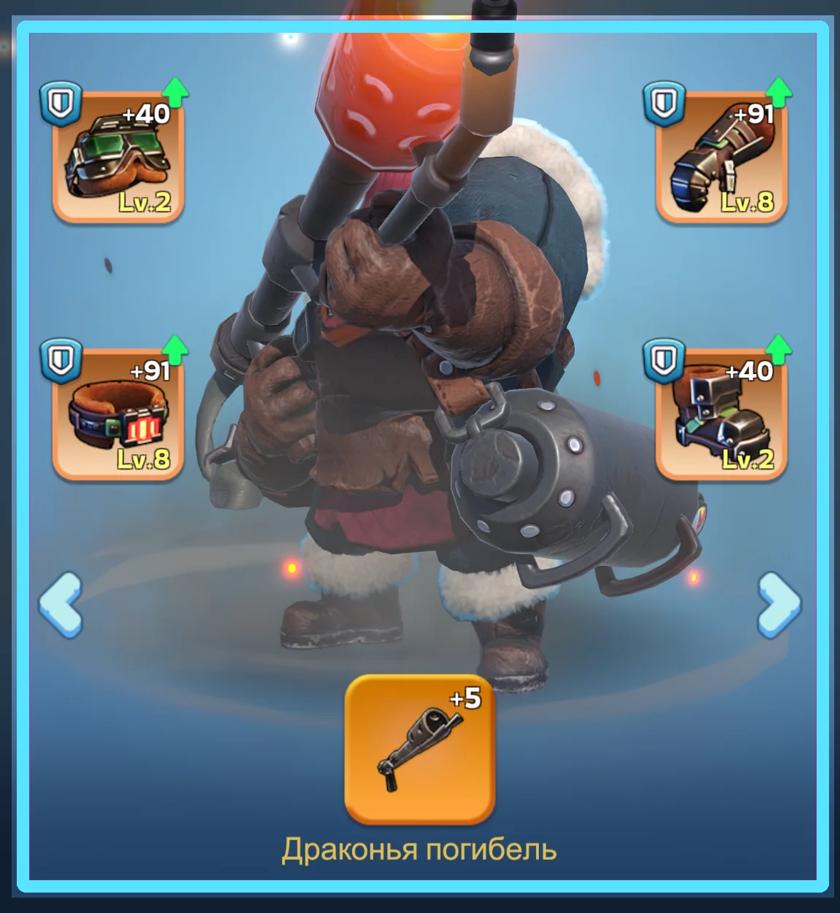
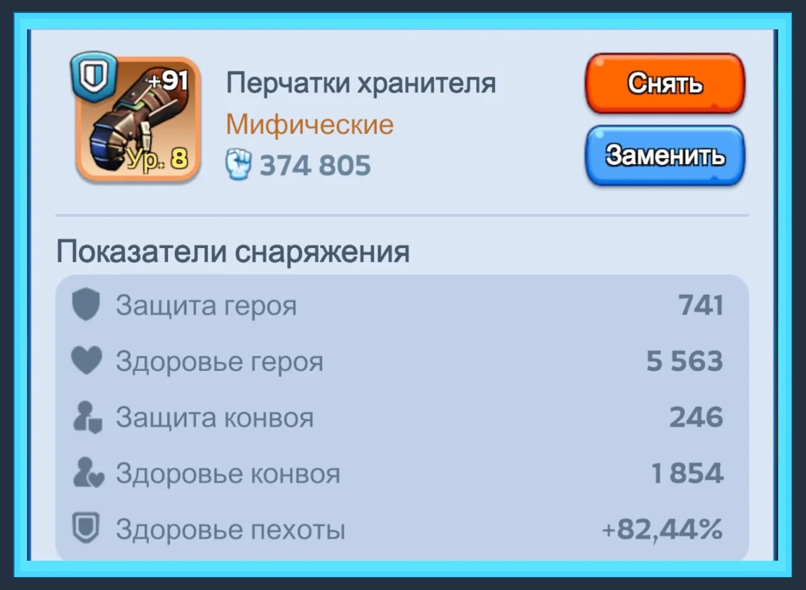
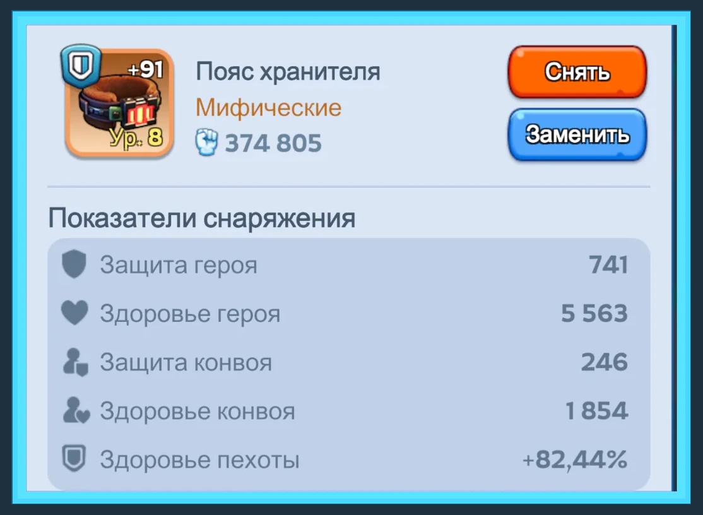
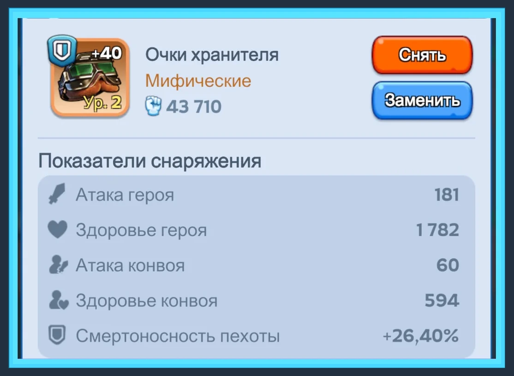
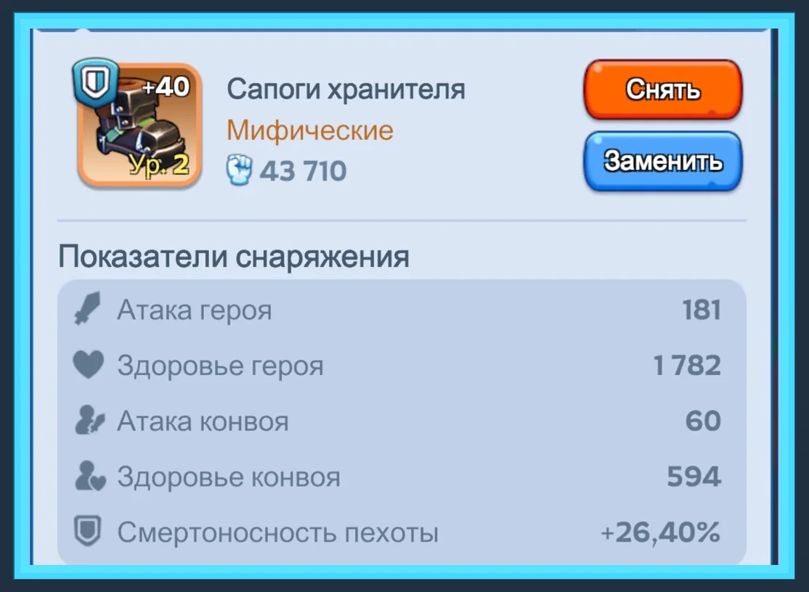
2. Стрелки и копейщики: смертоносность впереди, здоровье не мусор
Для стрелков основной боевой приоритет обычно смещается в смертоносность: их задача — быстро наносить урон. У копейщиков по распределению предметов действует та же схема: Шапка и Сапоги дают смертоносность, Пояс и Перчатки — здоровье.
Шапка + Сапоги усиливаем быстрее. Это атакующая пара со смертоносностью.
Стрелки регулярно получают урон от копейщиков: часть атак проходит сквозь строй и достаёт заднюю линию. Поэтому Пояс и Перчатки нельзя бросать на нуле.
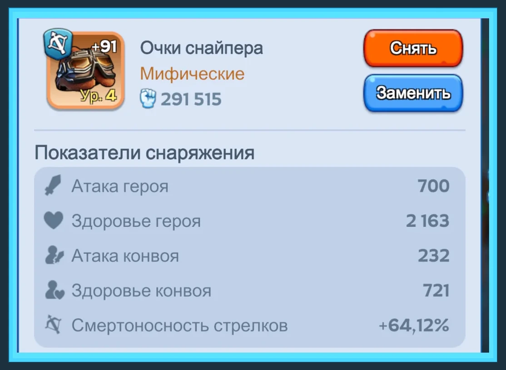
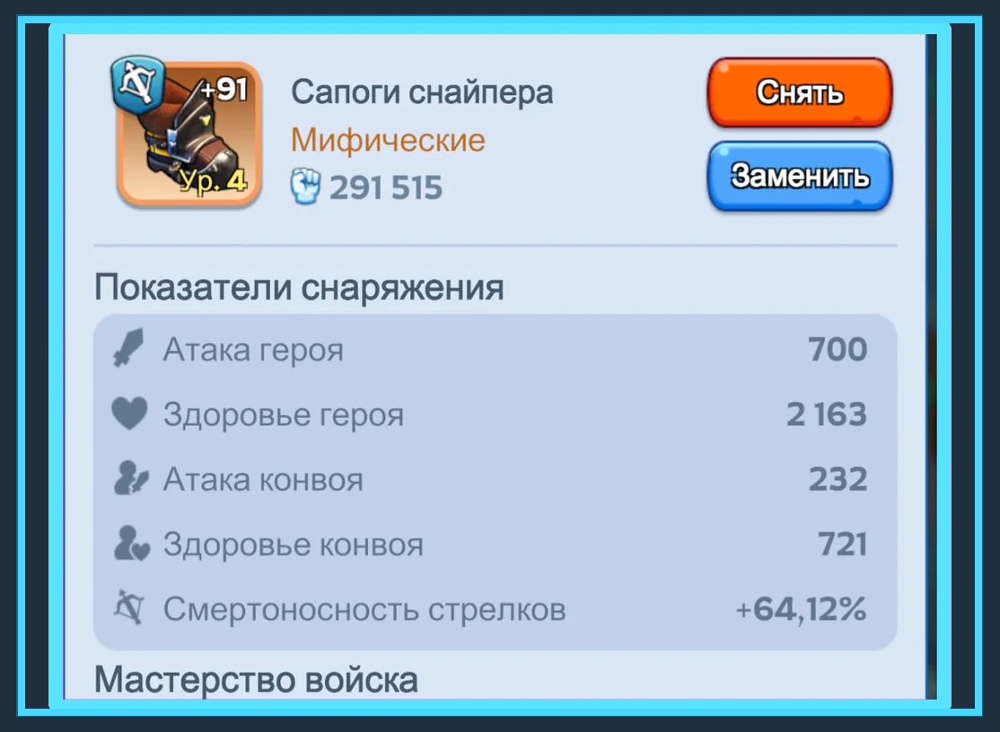
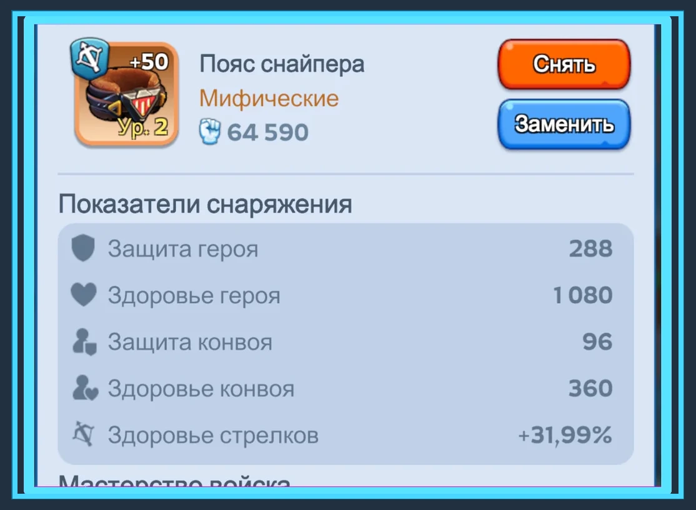
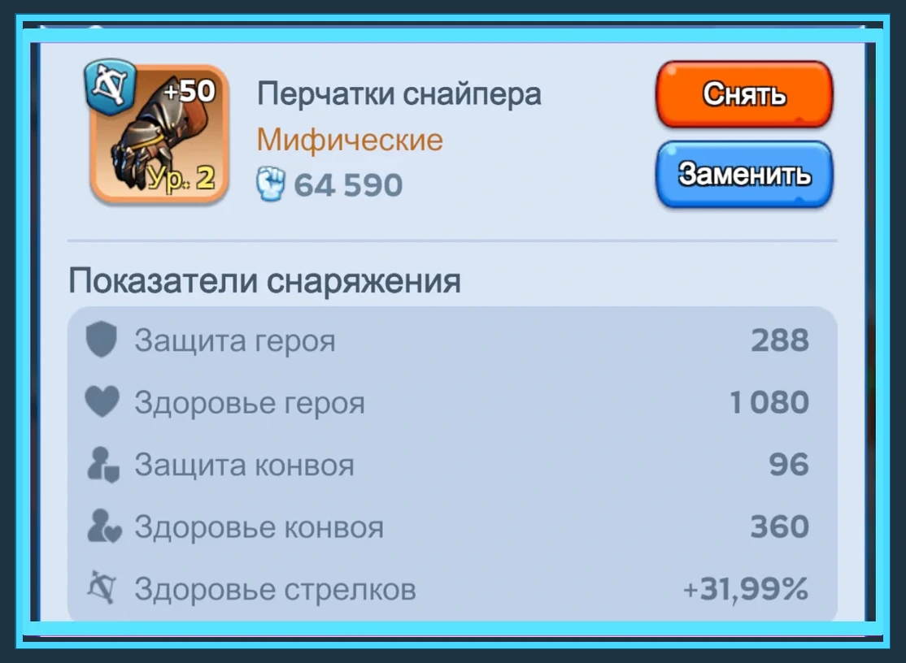
3. Рабочая лестница усиления
Обозначения: П — приоритетные два слота класса, Н — неприоритетные. Смысл лестницы — сохранять заметный разрыв, но не доводить вторичные предметы до состояния, когда их дешёвое улучшение уже выгоднее следующего дорогого шага основного.
4. Камни Эссенции и мастерство
Камни Эссенции — дефицитный ресурс, поэтому их особенно важно не распылять. Мастерство на приоритетной паре должно идти впереди вторичных предметов по той же логике, что и обычное усиление.
Пехота: Пояс + Перчатки. Стрелки и копейщики: Шапка + Сапоги. Вторичные предметы улучшаем, но Камни Эссенции не распределяем между четырьмя слотами поровну только ради красивых цифр.
5. Эксклюзивное снаряжение / виджеты
Эксклюзивный виджет принадлежит конкретному мифическому герою и не передаётся следующему поколению. Каждый уровень одновременно повышает базовые проценты и поочерёдно усиливает один из двух эксклюзивных навыков.
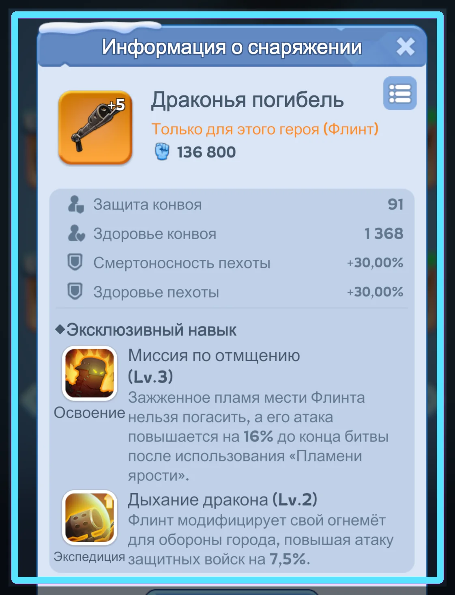
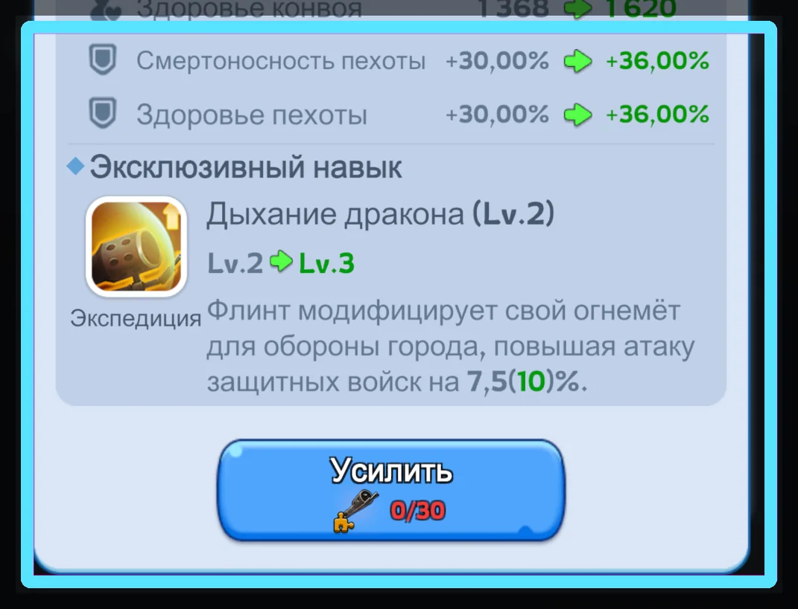
Как правило, игрока интересует именно Экспедиция. Если скоро выходит новый герой нового поколения и виджеты понадобятся уже ему, нет необходимости любой ценой дожимать текущий виджет до следующего нечётного уровня. Остановитесь на подходящем 2 / 4 / 6 / 8 и сохраните ресурс.
- Не открывайте выбираемые сундуки виджетов заранее. Пока сундук не привязан к конкретному герою, он сохраняет гибкость.
- Перед крупной тратой виджетов смотрим, насколько близко следующее поколение нужного класса.
- Оцениваем не только +6% за уровень, но и то, какой из двух навыков получит усиление именно на этом шаге.
6. Финальный алгоритм
- Пехота: здоровье в Пояс + Перчатки выводим вперёд.
- Стрелки / копейщики: смертоносность в Шапку + Сапоги выводим вперёд.
- Вторичные два слота не бросаем: подтягиваем их тогда, когда шаг становится дешёвым.
- Камни Эссенции и мастерство в первую очередь отправляем в приоритетную пару.
- Не стремимся к одинаковым цифрам на четырёх слотах — разрыв между П и Н нормален и желателен.
- Виджеты планируем по поколению героя; при дефиците ресурсов удобная точка остановки обычно находится на чётном уровне.